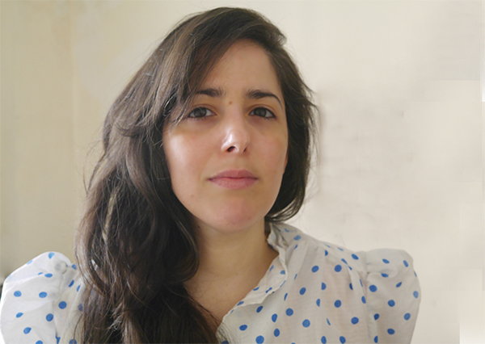

Art critic, historian and PhD researcher
art history – contemporary art – environmental art – cultural analysis – museum studies
חוקרת, מבקרת אמנות, אוצרת ומרצה
תולדות האמנות – אמנות עכשווית – אמנות ישראלית – אמנות סביבתית – תרבות חזותית